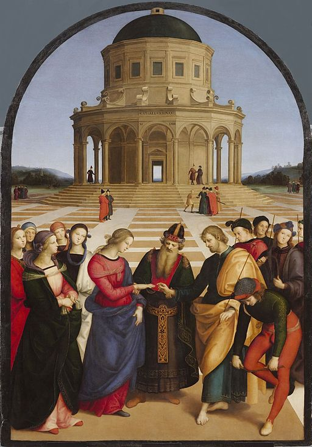

<head>
<meta charset="UTF-8" />
<meta name="keywords" content="drawing, painting" />
<meta name="description" content="drawings by Sunjy" />
<title>Sunjy</title>
<link rel="shortcut icon" type="image/x-icon" href="../../mImages/mCommon/favicon.ico" media="screen" />
<link rel="stylesheet" type="text/css" href="../../mCsses/mCommon/mCssA.css" />
<link rel="stylesheet" type="text/css" href="../../mCsses/mCommon/mCssB.css" />
<link rel="stylesheet" type="text/css" href="../../mCsses/mCommon/mCssC.css" />
<link rel="stylesheet" type="text/css" href="../../mCsses/mCommon/mCssD.css" />
<link rel="stylesheet" type="text/css" href="../../mCsses/mContent/mCssA.css" />
<link rel="stylesheet" type="text/css" href="../../mCsses/mContent/mCssB.css" />
<link rel="stylesheet" type="text/css" href="../../mCsses/mContent/mCssC.css" />
<link rel="stylesheet" type="text/css" href="../../mCsses/mContent/mCssD.css" />
</head>
<script type="text/javascript" src="../../mScripts/mContent/mContentAA.js" /></script>
<script type="text/javascript" src="../../mScripts/mContent/mContentAB.js" /></script>
<script type="text/javascript" src="../../mScripts/mContent/mContentAC.js" /></script>
<script type="text/javascript" src="../../mScripts/mContent/mContentAD.js" /></script>
<script type="text/javascript"></script> 
<script type="text/javascript">
document.write('<div class="mImgAbsolute"></div>');
/*
document.write('<p class="mFontSizeBColor" />From a white paper...</p>');
document.write('<table class="center"><tr><td>');
document.write('');
document.write('</td></tr></table>');
*/
</script>


<script type="text/javascript">
document.write('<p class="mFontSizeBColor" />The Marriage of the Virgin</p>');
document.write('<p class="mFontSizeSColor" />By Raphael. “The Marriage of the Virgin” depicts a marriage ceremony between Mary and Joseph. A similar themed version by Perugino inspired Raphael, the differences in the two artworks are marked by Raphael’s more subtle and refined style.<br><br>In this artwork, Raphael also challenged himself to draw the temple in perspective, with evident care, that it is delightful to behold. Painted during the Italian High Renaissance in 1504, this work was commissioned for a Franciscan church.</p>');
document.write('<table class="center" /><tr><td>');
document.write('<br>In this artwork, Raphael also challenged himself to draw the temple in perspective, with evident care, that it is delightful to behold. Painted during the Italian High Renaissance in 1504, this work was commissioned for a Franciscan church." />');
document.write('</td></tr></table>');
</script>


